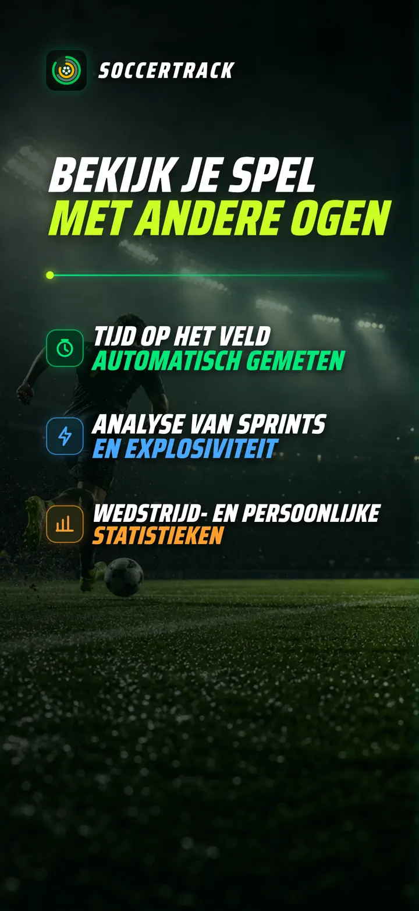
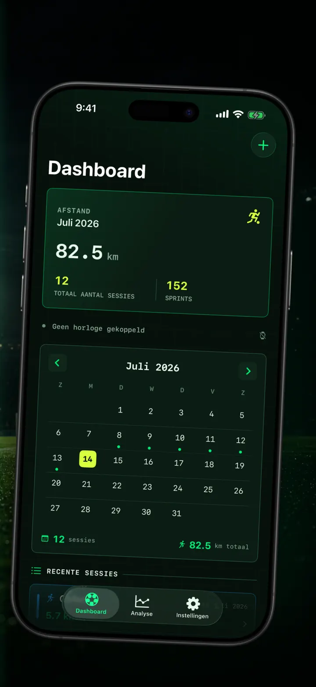
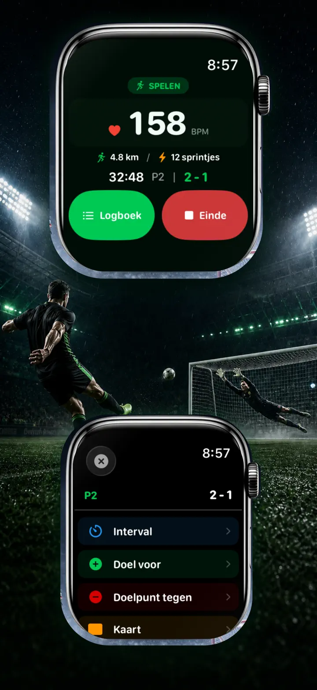
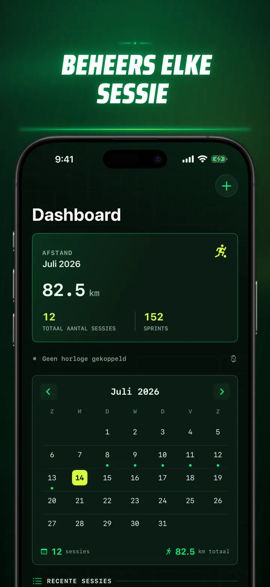
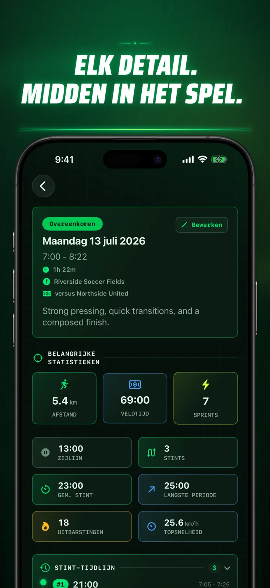
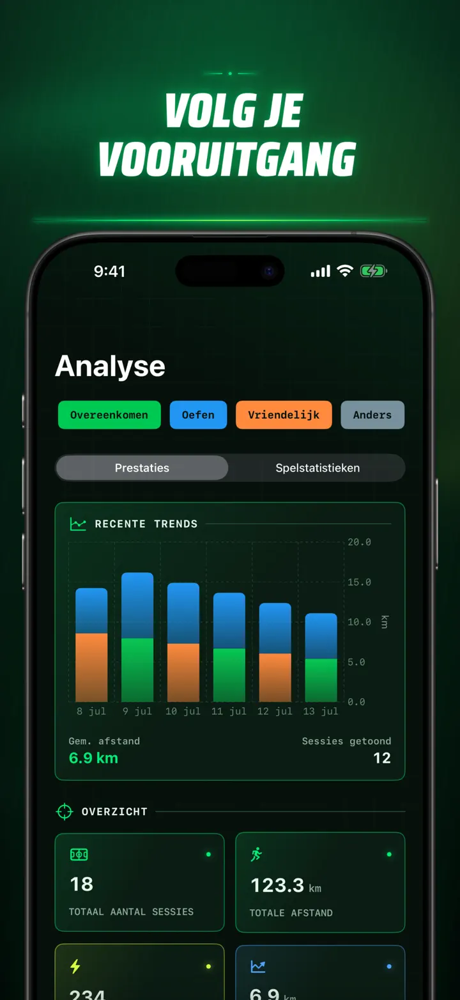
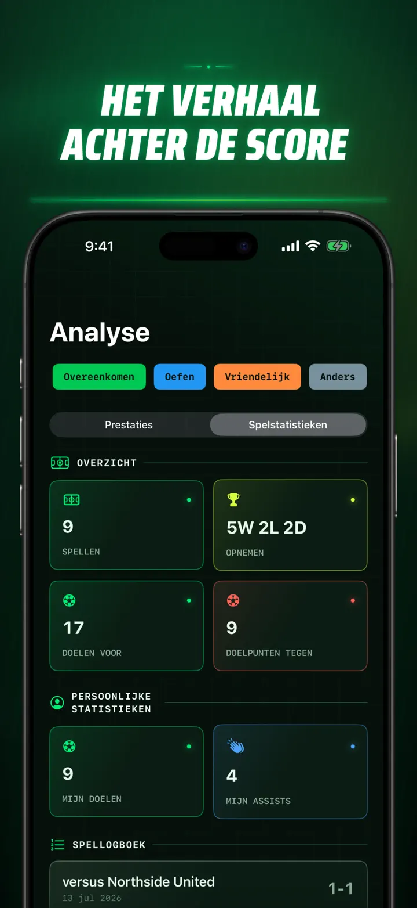
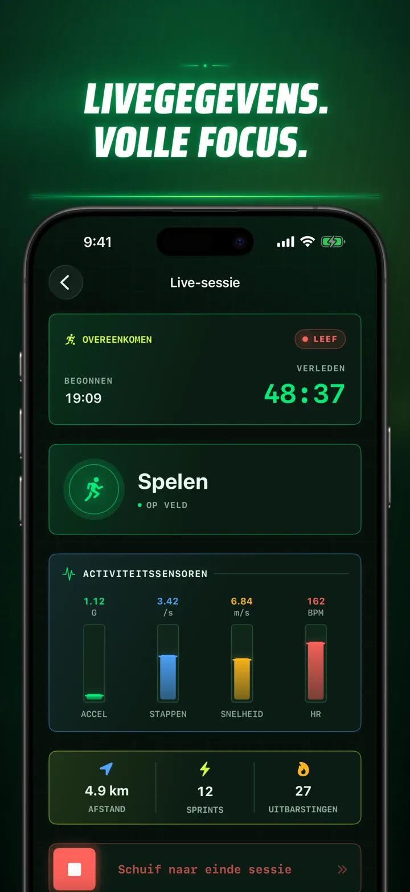
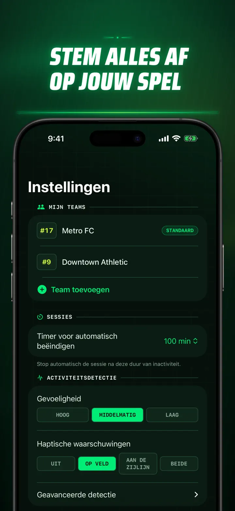
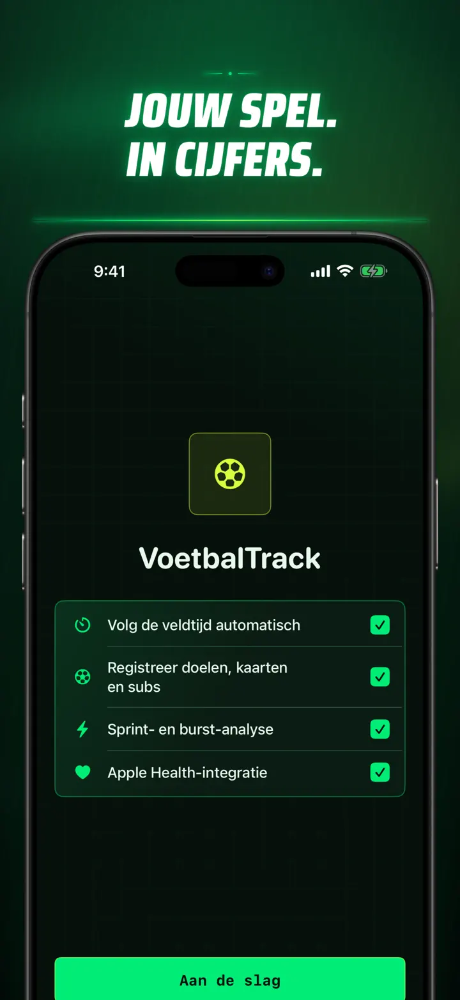

Soccer Time Track
Voetbaltijd & wedstrijdanalyse
Start een sessie en speel. Apple Watch scheidt automatisch veld- en banktijd en legt live metingen, sprints, wedstrijdmomenten en trends vast.
Download in de App Store
Over de app
Bekijk je wedstrijd met andere ogen.
Soccer Time Track verandert Apple Watch in een wedstrijdtracker voor spelers die meer willen begrijpen dan alleen de eindstand. Start vanaf je pols, concentreer je op het spel en bekijk daarna op iPhone een compleet beeld van je prestaties.
AUTOMATISCHE TIJD OP HET VELD
Zie wanneer je echt in actie was. Signalen van beweging, work-out en locatie helpen onderscheid te maken tussen spelen, lage activiteit en tijd op de bank. Je krijgt:
- Tijd op het veld en op de bank
- Speelperioden en een duidelijke tijdlijn
- Een gedetailleerd overzicht van het verloop van je sessie
WEDSTRIJDDAG VANAF JE POLS
Kies Wedstrijd, Training, Oefenwedstrijd of Overig. Leg tijdens het spelen vast:
- Doelpunten voor en tegen
- Je eigen doelpunten en assists
- Gele en rode kaarten
- Wissels en periodewisselingen
JOUW WEDSTRIJD, GEMETEN
Ga verder dan minuten met onder meer:
- Afstand
- Gemiddelde en maximale snelheid
- Sprints en intensieve versnellingen
- Hartslag en actieve calorieën
- Cadans en acceleratie
LIVE DATA, VOLLE FOCUS
Een gekoppelde iPhone kan live metingen tonen terwijl Apple Watch de work-out laat doorlopen. Jij blijft bij de wedstrijd en je gegevens worden op de achtergrond opgebouwd.
ZIE JE VOORUITGANG
Bewaar wedstrijden, trainingen, oefenwedstrijden en andere sessies in één geschiedenis. Bekijk trends en persoonlijke records, vergelijk prestaties en voeg team, rugnummer, tegenstander, locatie en notities toe om het verhaal achter elk resultaat te bewaren.
Je gegevens elders nodig? Exporteer sessies, speelperioden en wedstrijdgebeurtenissen als CSV of JSON.
GEMAAKT VOOR APPLE WATCH EN APPLE HEALTH
Met jouw toestemming gebruikt Soccer Time Track work-out-, hartslag-, bewegings- en locatiegegevens om inzichten te maken en voltooide voetbalwork-outs in Apple Health te bewaren. Voor automatische registratie is Apple Watch vereist. Je kunt ook handmatig een sessie toevoegen op iPhone.
JOUW GEGEVENS, JOUW WEDSTRIJD
Je sessies blijven op je apparaten en, wanneer iCloud-synchronisatie aanstaat, in je privé-iCloud-database. Soccer Time Track vraagt geen account, bevat geen advertenties en gebruikt geen analyses van derden.
Stop met raden hoeveel je speelde. Ontdek wat je met die tijd hebt gedaan.
Privacybeleid: https://masawata.net/SoccerTimeTrack/privacy-policy.html Servicevoorwaarden: https://www.apple.com/legal/internet-services/itunes/dev/stdeula/
Schermafbeeldingen









Soccer Time Track
Start een sessie en speel. Apple Watch scheidt automatisch veld- en banktijd en legt live metingen, sprints, wedstrijdmomenten en trends vast.
Download in de App Store